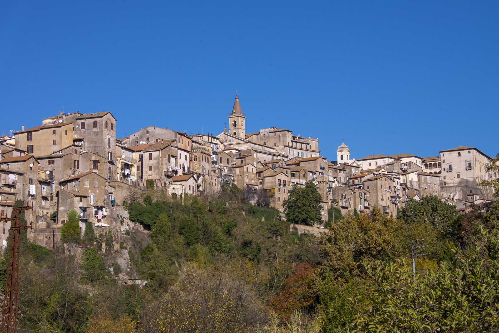
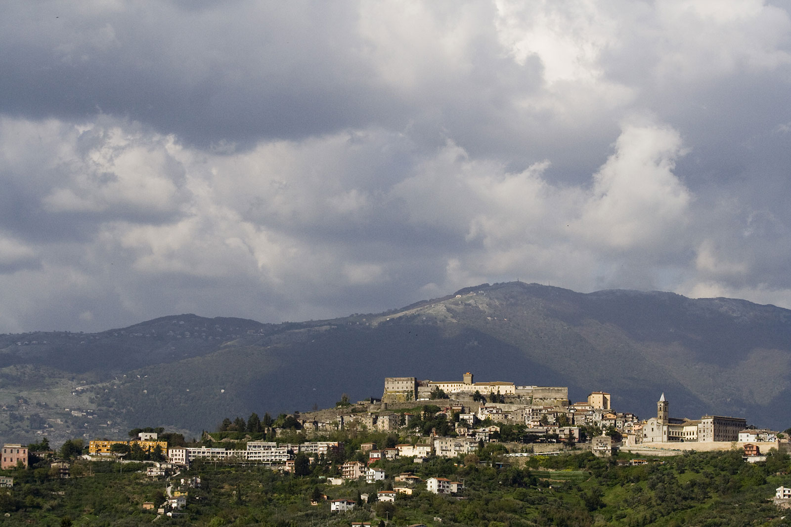

Tour Guide
DAY 1
Genazzano
Visita Genazzano, famosa per il suo castello e le tradizioni locali che la rendono unica.
DAY 2
Paliano
Visita il bellissimo centro storico di Paliano, con le sue stradine acciottolate e i panorami mozzafiato.
DAY 3
Fiuggi
Fiuggi è famosa per le sue acque termali e offre un'esperienza di relax unica.

DAY 4
Segni
Scopri Segni, un antico borgo con una ricca storia e monumenti storici da esplorare.

DAY 5
Montecompatri